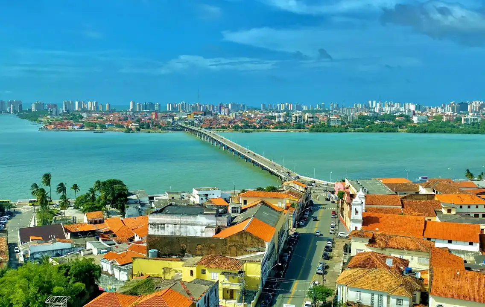
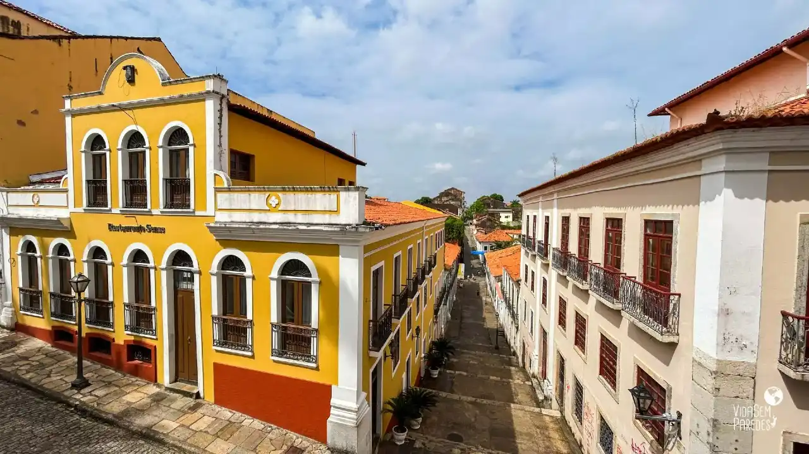
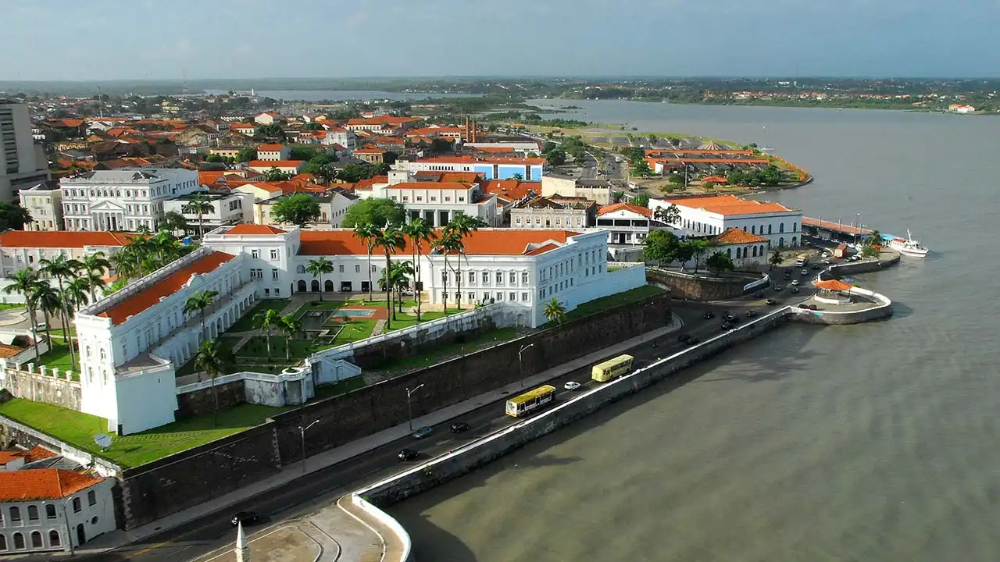
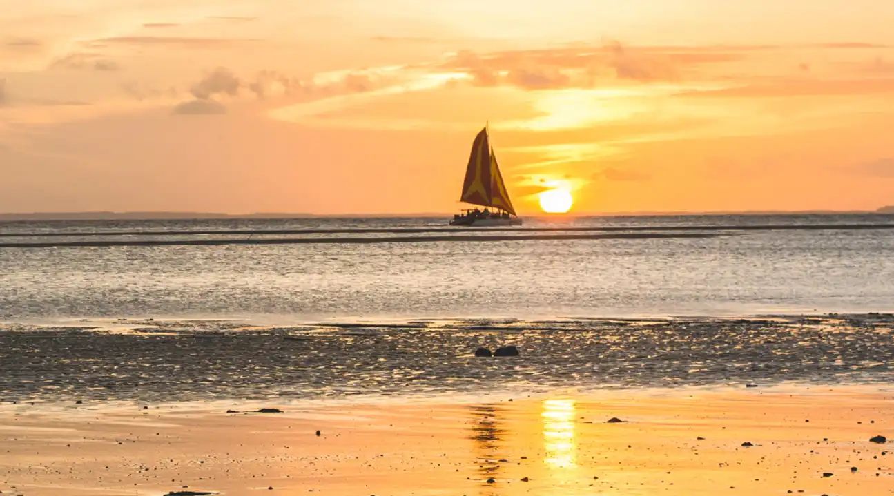
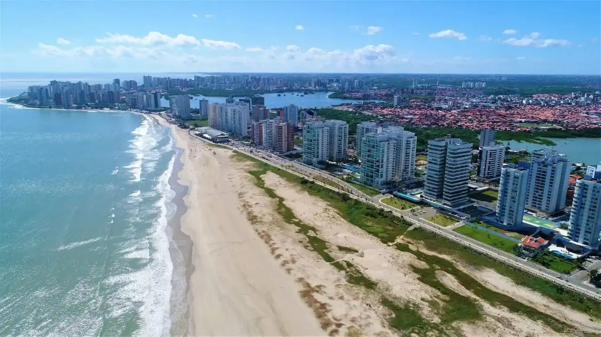

São Luís Chamber of Commerce
Home
Directory
Discover
Join

Fig.1 - São Luís Island.

Fig.2 - Historic Center Of São Luís.
Fig.3 - Litorânea Beach, São Luís.

Fig.4 - Historic Center Of São Luís.

Fig.5 - Sunset in São Luís.

Fig.6 - São Luís Island.